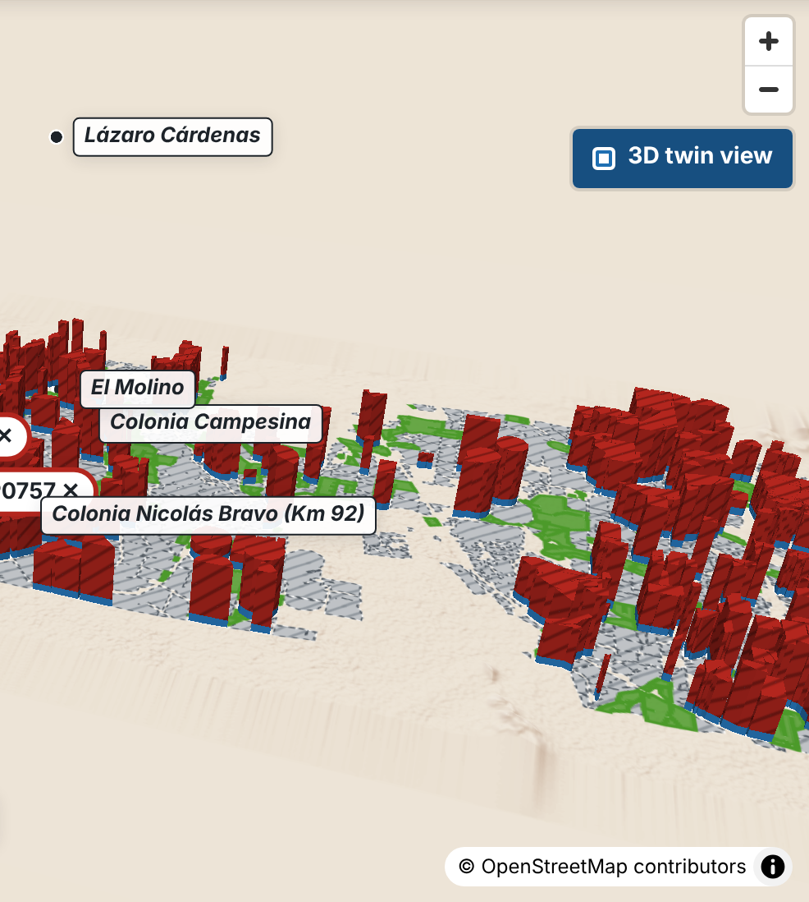
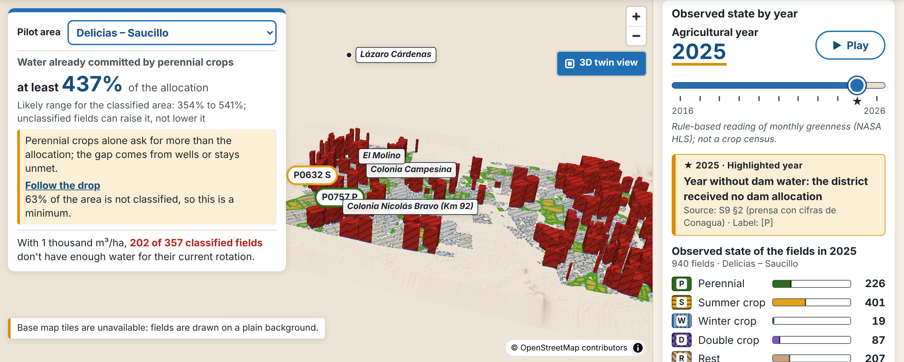
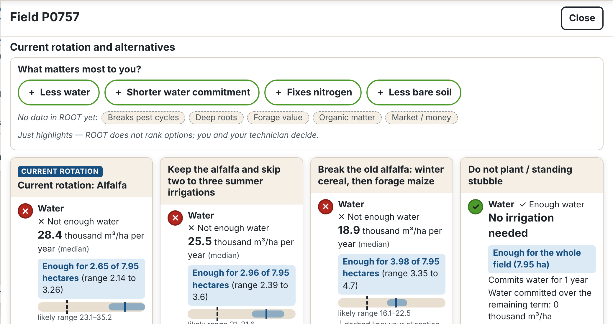
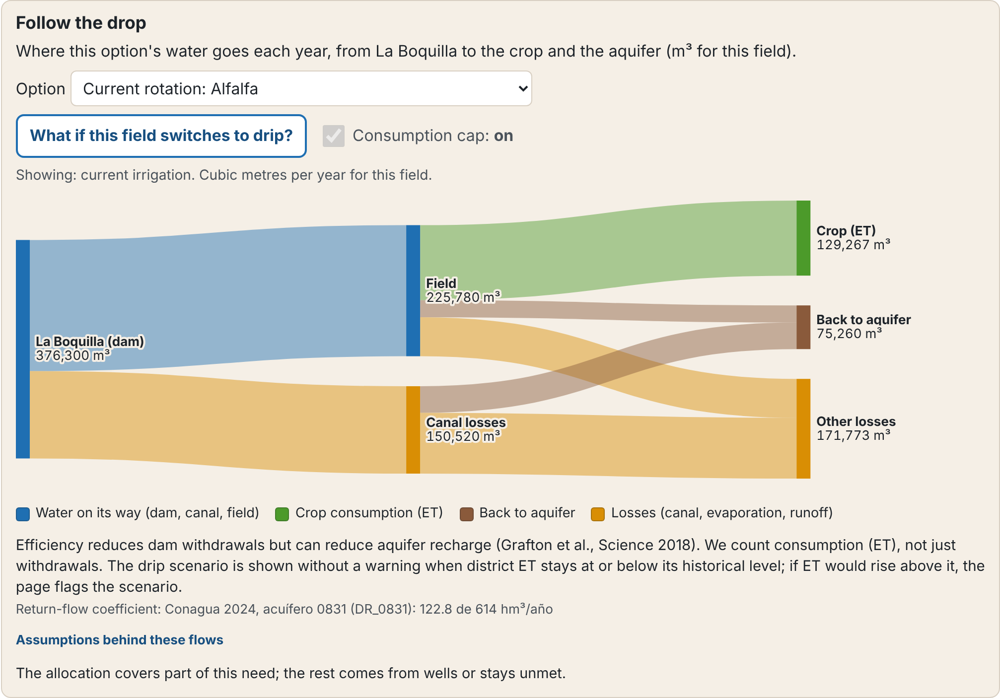
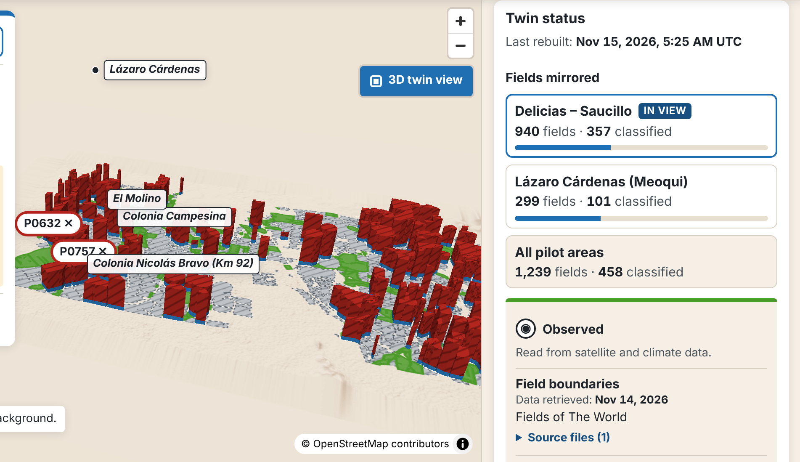
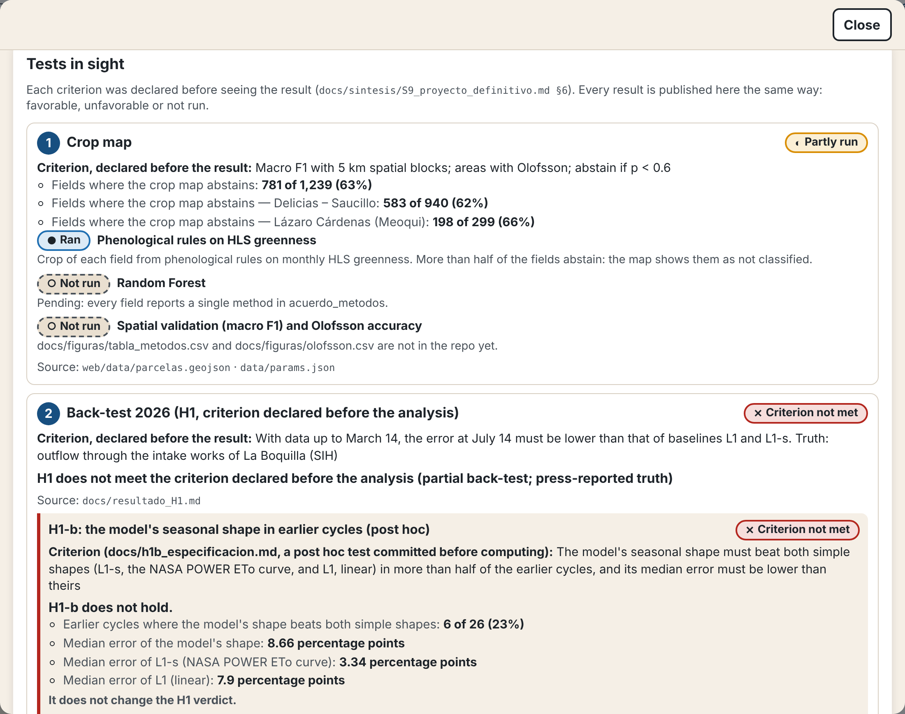
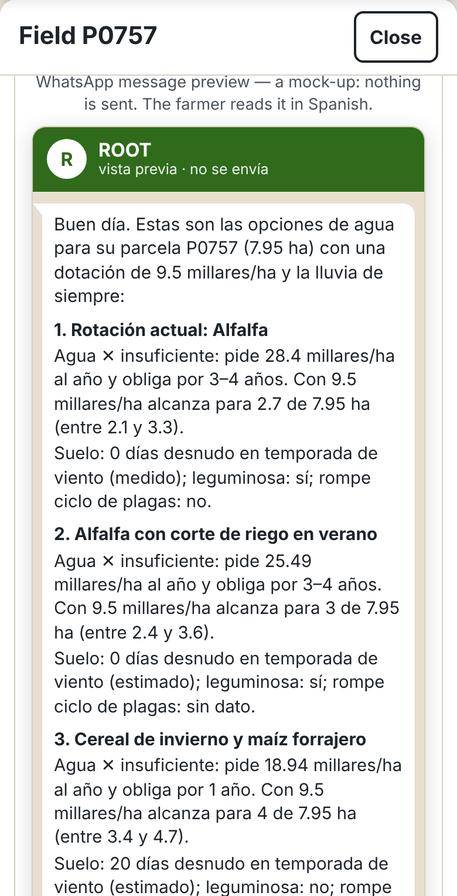

Before you plant, see the water you are committing.

The problem
Annual crops could be skipped. Orchards and alfalfa still needed water.
: thousand m³/ha,
At that allocation, perennial crops alone ask for at least of it (likely range ) in .

The water term
Three answers per option, field by field:
Field , , allocation «» ( thousand m³/ha): needs thousand m³/ha per year, commits water for years, enough for of hectares.
ROOT shows every option side by side and does not mark one as the best.

Follow the drop
Dam → canal → field → crop → aquifer
Field , current rotation, per year: leave the dam; are consumed by the crop; return to the aquifer.
More efficient irrigation reduces dam withdrawals. It can also reduce aquifer recharge.
We count the water consumed, not just the water withdrawn (Grafton et al., Science 2018).

How it works, with NASA data
No field sensors. No real-time data. Updated on each rebuild from satellite and climate data.

Tests in sight

Closing
Supports, never replaces, the judgment of farmers and local experts.
It does not allocate, sell or trade water. It does not forecast the dam.
We ask: a district technician to check field efficiency; farmers to correct their fields.
Next phase / vision: conversational agent · field sensors · optimizer
Page:
Repository:
Video:
